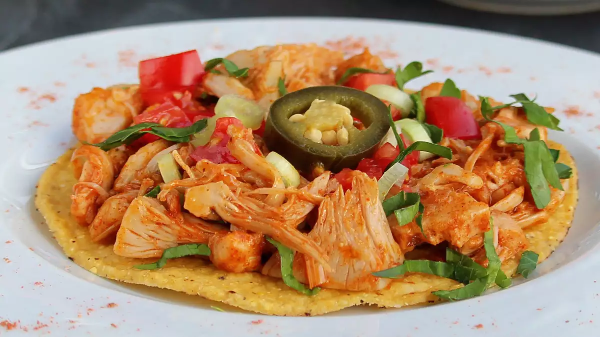

JACKFRUIT VEGAN TACOS
Ingredients
- 2 (20 ounce) cans jackfruit in brine - drained, rinsed, and cut into bite-sized pieces
- 1 tablespoon vegetable oil
- 1 tablespoon water, or more as needed
- 2 tablespoons taco seasoning mix, or to taste
- 4 taco shells
- ½ cup salsa, or to taste
Steps
- Heat oil in a small saucepan over medium heat. Add jackfruit; cook and stir for 2 to 3 minutes. Add 1 tablespoon water and taco seasoning; stir until well combined, about 1 minute. Add additional water 1 tablespoon at a time as needed.
- Place a small amount of jackfruit in each taco shell; add 2 tablespoons salsa.